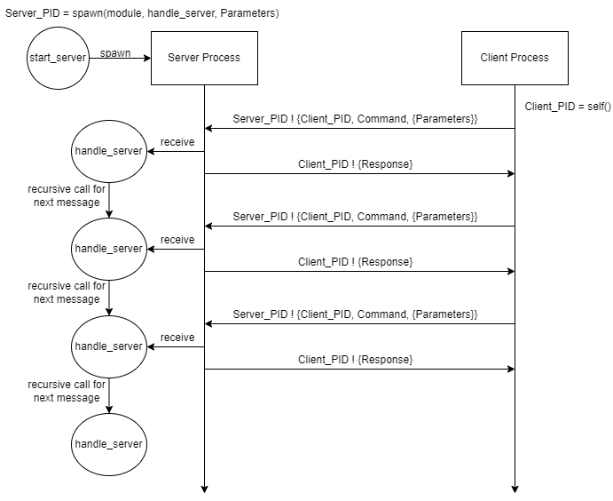

Chapter 7 - Streams and Lazy Evaluation
In this lesson we will learn about the Stream Design Pattern. Streams are things that provide you values when you need them. They are very similair to the unfold function that we saw earlier. This “lazy” approach can actually save you a lot of time and memory when you only need something one at a time.
7.1 Streams
A stream provides information to us one item at a time whenever we need it. This implies that when writing a stream, we need to consider two things:
- The user needs to provide a function to call to evaluate the next item in the stream.
- The function provided must be aware of the previous item.
Let’s look at both of these needs separately. If we wanted to provide the user with the ability to add 1 to a number at any time, we could write a function that returns a function to be called later.
\(spec ~ ~ lazy\_incr\_once :: integer \rightarrow (\lambda :: \rightarrow integer).\)
\(de\mathit{f} ~ ~ lazy\_incr\_once :: Value \rightarrow (\lambda :: \rightarrow Value + 1).\)
\(\nonumber\)
In the code above, we are running the function that was returned when we called lazy_incr_once. It adds 1 to the original value 4 that was provided but never increases on subsequent calls. We now combine this with the desire to have the function return something based on the previous result. In the lazy_incr function, we will return two things: the next value and a brand new function to call to obtain the next value. Notice that we are defining a custom data type called iterator which will contain both of these things. Our ultimate goal by the next lesson is to define this as a Monad.
\(struct ~ ~ iterator ~ ~ \lbrace a, \lambda_{stream} \rbrace.\)
\(spec ~ ~ \lambda_{stream} :: \rightarrow iterator.\)
\(spec ~ ~ lazy\_incr :: integer \rightarrow \lambda_{stream}.\)
\(de\mathit{f} ~ ~ lazy\_incr :: Value \rightarrow (\lambda_{stream} :: \rightarrow \lbrace (Value + 1), (lazy\_incr ~ ~ (Value + 1)) \rbrace).\)
\(\nonumber\)
lazy_incr(Value) -> fun() -> {Value + 1, lazy_incr(Value+1)} end.
test() ->
L = lazy_incr(4),
{5, L2} = L(),
{6, L3} = L2(),
{7, L4} = L3(),
ok.Another classic stream is the range function which will provide a sequence of numbers but only one at a time. In this function, we will assume that the sequence will go from Start to Stop, inclusive and that Start <= Stop. Unlike the previous example, this iterator will need to stop. We will modify our new fixed_iterator to have other possible values.
\(struct ~ ~ \mathit{f}ixed\_iterator\)
\(\quad \quad \lbrace a, \lambda_{stream} \rbrace ~ ~ or\)
\(\quad \quad \lbrace atom(unde\mathit{f}ined), atom(done) \rbrace.\)
\(spec ~ ~ \lambda_{stream} :: \rightarrow \mathit{f}ixed\_iterator.\)
\(spec ~ ~ range :: integer ~ ~ integer \rightarrow \lambda_{stream}.\)
\(de\mathit{f} ~ ~ range :: Start ~ ~ Stop \rightarrow (\lambda_{stream} :: \rightarrow \lbrace Start, (range ~ ~ (Start+1), Stop) \rbrace )\)
\(\quad \quad \text{when} ~ ~ Start \leq Stop;\)
\(de\mathit{f} ~ ~ range :: Start ~ ~ Stop \rightarrow (\lambda_{stream} :: \rightarrow \lbrace undefined, done \rbrace).\)
\(\nonumber\)
The erlang code is given below:
range(Start, Stop) when Start =< Stop ->
fun () -> {Start, range(Start+1, Stop)} end;
range(_Start, _Stop) ->
fun () -> {undefined, done} end.We can simplify the above code by moving the guards into the anonymous function as shown below:
range(Start, Stop) ->
fun () when Start =< Stop -> {Start, range(Start+1, Stop)};
() -> {undefined, done} end.An example of the test code using the range function is given below. Notice that the value of {undefined, done} is returned when the stream is completed.
test() ->
Stream1 = range(1,4),
{1, Stream2} = Stream1(),
{2, Stream3} = Stream2(),
{3, Stream4} = Stream3(),
{4, Stream5} = Stream4(),
{undefined, done} = Stream5(),
ok.Problem Set 1
You can find the template for the problem sets in this lesson here: prove07.erl
- Modify the
rangefunction to take a third parameter calledStep. You should increase the sequence by the amount ofStep. If theStepis negative, then create a decreasing sequence. If theStepis 0, then thedonestate should occur immediately. Test code is provided to test your stream. - Create a new stream called
wordswhich will split text by spaces into sub-strings. Each time the stream is called, it should return back the next string. For example, if the text was “The cow jumped over the moon.”, then the stream would first return “The”, then “cow”, then “jumped”, and so forth. Use the samefixed_iteratortype described above. You are provided a function calledfirst_wordwhich returns a tuple in the format{Word, Rest}whereWordis the first word andRestis the remaining text (just like working with values in a list). Test code is provided to test your stream.
7.2 Stream Monad
In the previous section we created a fixed_iterator type that the range function supported. This type is actually a Monad. The \(\lambda_{stream}\) provided in the fixed_iterator is the meta-data or state that we are maintaining for our stream. To complete the Monad definition, we need a type constructor (or unit function) and a bind function. Since the type constructor will need to create a stream that hasn’t started yet, we will modify our specification for the Monad Type we had earlier (the second condition in the struct is new):
\(struct ~ ~ \mathit{f}ixed\_iterator\)
\(\quad \quad \lbrace a, \lambda_{stream} \rbrace ~ ~ or\)
\(\quad \quad \lbrace atom(unde\mathit{f}ined), \lambda_{stream} \rbrace ~ ~ or\)
\(\quad \quad \lbrace atom(unde\mathit{f}ined), atom(done) \rbrace.\)
\(spec ~ ~ \lambda_{stream} :: \rightarrow \mathit{f}ixed\_iterator.\)
\(\nonumber\)
The type constructor should be used to create the iterator the first time. We will call our type constructor iter. The iter will take as an input a \(\lambda_{stream}\) function (the function that is returned by our range function or any other stream). The iter will produce the \(\lbrace atom(unde\mathit{f}ined), \lambda_{next} \rbrace\). This is the state of our iterator before we actually start the iteration.
\(spec ~ ~ iter :: \lambda_{stream} \rightarrow \mathit{f}ixed\_iterator.\)
\(de\mathit{f} ~ ~ iter :: \lambda_{stream} \rightarrow \lbrace unde\mathit{f}ined, \lambda_{stream} \rbrace.\)
\(\nonumber\)
The bind should allow us to take our fixed_iterator (the Monad type returned by the iter function) and pass it to our stream function which will return an updated fixed_iterator. Remember that our stream function is always regenerated and has no input parameters. The next function is re-created each time with the next value built-into the function. We will call our bind function next and it will be responsible for getting the next stream iteration. Unlike previous bind functions we have used, this bind will not take a function parameter because we will limit the application of this bind function only to our \(\lambda_{stream}\) function.
\(spec ~ ~ next :: \mathit{f}ixed\_iterator \rightarrow \mathit{f}ixed\_iterator.\)
\(de\mathit{f} ~ ~ next :: \lbrace Value, done \rbrace \rightarrow \lbrace unde\mathit{f}ined, done \rbrace;\)
\(de\mathit{f} ~ ~ next :: \lbrace Value, \lambda_{stream} \rbrace \rightarrow (\lambda_{stream}).\)
\(\nonumber\)
Using these specifications and definitions, we can complete the fixed_iterator Monad along with helper functions (value and lambda) to access both parts of our Monad type.
iter(Stream) -> {undefined, Stream}.
next({_Value,done}) -> {undefined, done};
next({_Value,Lambda}) -> Lambda().
value({Value,_Lambda}) -> Value.
lambda({_Value,Lambda}) -> Lambda.We can use our new functions and show that calling our bind function next will result in undefined if we complete our iterator.
Next1 = next(iter(range(1,4))),
io:format("~p~n",[value(Next1)]), % Print 1
Next2 = next(Next1),
io:format("~p~n",[value(Next3)]), % Print 2
Next3 = next(Next2),
io:format("~p~n",[value(Next3)]), % Print 3
Next4 = next(Next3),
io:format("~p~n",[value(Next4)]), % Print 4
Next5 = next(Next4),
io:format("~p~n",[value(Next5)]), % Print undefined
Next6 = next(Next5),
io:format("~p~n",[value(Next6)]), % Print undefinedWhen we think about the fixed_iterator monad, we need to consider what the advantage is for using it. First, we could use it as means of looping through a list of values one at a time. This is not much different then creating a list and giving it to a recursive call. Perhaps we want to sum a lists of numbers. I could write the following code to sum the numbers 1 to 1000:
Assuming that we wrote a function iter_sum (specification below) which took in a fixed_iterator monad instead of a list, we could then write the following code to sum those same numbers 1 to 1000:
\(spec ~ ~ iter\_sum :: \mathit{f}ixed\_iterator \rightarrow integer.\)
\(\nonumber\)
If we run both of these, we will see not much difference. However, what if we summed the numbers from 1 to 500,000,000? Consider the work that must be done. If the first example, the lists:seq function will create the list first which is an \(O(n)\) operation and we take up a lot of memory. After it creates the list, it then needs loop through the list again recursively to add up the values. The is another \(O(n)\) operation.
In the second example, the iter and range functions do not create any list. This is \(O(1)\). The iter_sum will loop recursively on the stream until we get to {undefined,done}. This will be \(O(n)\). Note that there is no data structure involved. Removing the overhead will drastically reduce the time it takes. In the problem set, you will observe the actual time difference.
In other languages like Haskell, there is built-in support for lazy functions. In Erlang we have to create the additional functions like iter and iter_sum. It may seem like extra work, but imagine if our lazy function was to read the next line of very large file or dataset, the next value in a list that has no pre-defined end, or the next page of results from an API. Instead of loading everything up (or generating our list of numbers) first, we can write a stream function to give us the next thing. The stream is nothing more than a function without parameters that has the current state contained in that function.
Problem Set 2
- Implement the
iter_sumfunction to recursively add up all the values in thefixed_iteratorstream created withiter(range(1,500000000,1)). The test code already calls theiter_sumfunction. It may take a few minutes to run the code. The sum should be 125,000,000,250,000,000. You can reduce the number down to 10 for testing purposes and the change it back to 500,000,000 when youriter_sumis working. - The test code will display the current time as
{hour,minutes,seconds}. Describe in the comments what you observed when comparing thelists:sumand theiter_sumfunctions.
7.3 Erlang Processes & Streams
Another common problem solved with streams is a unique ID generator. We could write the same code above to obtain a function that will return the next available number (i.e. prev number + 1). However, if we had multiple software components that needed to use the same unique ID generator, then we need a slightly different approach.
Erlang supports a scalable process system that allows for safe concurrent operations. This process system can be used locally with our software or it can be used along with networking code to support communication between different machines.
The diagram below shows how a client/server process architecture can be setup in Erlang. We will assume in our discussion that both the client and the server are running locally on our same machine.

In the diagram above, we have a process that is started (or spawned) by start_server and handles messages received by handle_server. The client uses the server process ID (PID) to send messages to the server and then waits for a response. All messages sent to the server are formatted as follows:
\(\lbrace Client\_PID, Command, \lbrace Parameters \rbrace \rbrace\)
\(\nonumber\)
Responses back to the client are formatted as follows:
\(\lbrace Response \rbrace\)
\(\nonumber\)
This simple server has only two commands:
- echo - Send the text back to the client
- add - Add the two numbers and send back the answer to the client.
The server can handle only one request at a time. After the server handles the request, the handle_server function is called again to handle the next request. This ability to handle only one thing at a time will help us create the unique ID server later on. Let’s first look at the Erlang code needed:
handle_server() ->
receive
{Client_PID, echo, {Text}} -> Client_PID ! {Text};
{Client_PID, add, {X, Y}} -> Client_PID ! {X+Y}
end,
handle_server().
start_server() ->
spawn(prove07, handle_server, []).
send_to_server(Server_PID, Command, Params) ->
Server_PID ! {self(), Command, Params},
receive
{Response} -> Response
end.The start_server function will spawn a new process. When spawning a new process, the handler function is specified along with its module name and a list of any parameters. In this simple example, there are no parameters. Note that you have to export the handle_server function for the spawn function to work properly.
The handle_server function uses the receive command to receive a message from a client. When one is received and matches one of the patterns in the receive command block, then a response is sent back. In Erlang, a message is sent using the syntax: PID ! Message. We use the Client PID that we received to send the response back. The call to handle_server recursively at the end will allow the server to response to the next client.
The send_to_server function is a utility function to help us send a message to server and receive the response. When sending messages to the server, the Erlang function self() is called to obtain the client PID to send to the server. A test example is shown below:
2> Server_PID = prove07:start_server().
<0.85.0>
3> prove07:send_to_server(Server_PID, echo, {"Hello"}).
"Hello"
4> prove07:send_to_server(Server_PID, add, {13, 8}).
21
5>If we wanted to create a unique ID server following this same format, we can modify our handler function to take a parameter that keeps track of the current ID. Remember that each call to the handler function is guaranteed to handle only one client at a time. Similar to the concept of the stream functions being created with the next value in the stream, our handler will create the next value to be used.
Here is the code for our new start_id_server and handle_id_server. Notice that the handle_id_server now has an input parameter and it is initialized in the spawn function within start_id_server. For the export, notice that we specify the arity: handle_id_server/1.
-export([handle_id_server/1]).
handle_id_server(Curr_ID) ->
receive
{Client_PID, id, {}} -> Client_PID ! {Curr_ID}
end,
handle_id_server(Curr_ID + 1).
start_id_server() ->
spawn(prove07, handle_id_server, [0]).When the handle_id_server is called recursively to handle the request from the next client, the Unique_ID is incremented by 1.
Reusing the same send_to_server function, we can generate new unique ID’s as follows starting with 0.
5> ID_Server_PID = prove07:start_id_server().
<0.89.0>
6> prove07:send_to_server(ID_Server_PID, id, {}).
0
7> prove07:send_to_server(ID_Server_PID, id, {}).
1
8> prove07:send_to_server(ID_Server_PID, id, {}).
2
9> prove07:send_to_server(ID_Server_PID, id, {}).
3
10> prove07:send_to_server(ID_Server_PID, id, {}).
4
11> prove07:send_to_server(ID_Server_PID, id, {}).
5
12> Problem Set 3
- Modify the
handle_serverfunction to support anavgcommand that will average a variable collection of numbers. For example, if the parameters field is{10,20,30,40}then 25 will be returned back to the client. You can use the Erlanglists:sumandlengthfunctions. - Create a server based on the Unique ID server but with functions called
handle_running_avg_server(remember that this one needs to be exported) andstart_running_avg_serverthat maintains a running average of numbers submitted. There should be three commands:- add - Adds a number to the running average and returns the current average
- remove - Removes a number from the running average and returns the current average
- display - Returns the current average
\(\nonumber\)
\(\nonumber\)